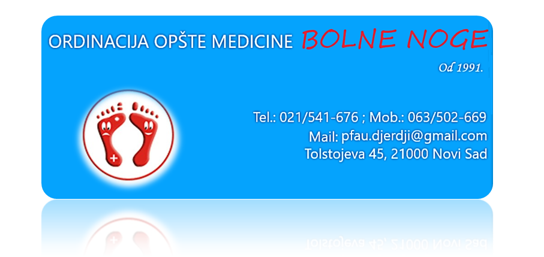

DOBRODOŠLI
U ordinaciji opšte medicine ”Bolne noge” bavimo se podologijom, o kojoj se zna relativno malo na našim prostorima i neopravdano je zapostavljena u odnosu na razvijene zemlje Ameriku, Nemačku, Japan, Španiju, Francusku... gde se podologija tradicionalno izučava i koristi..Nastavi čitanje
